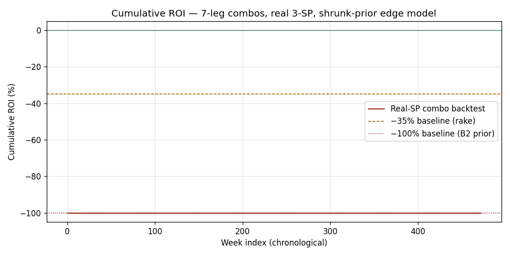
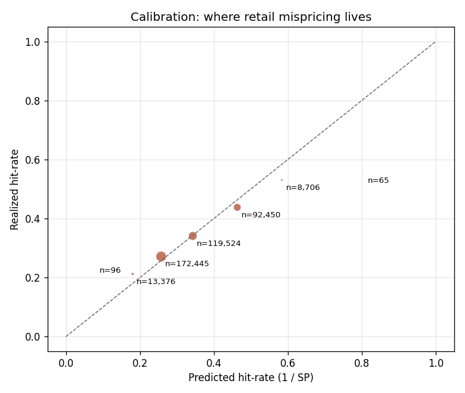

| Check | Value | Expectation |
|---|---|---|
| Σ(1/SP) per match (mean) | 1.0018 | ≈ 1.00 (rake comes via 0.65 RR multiplier, not vig in odds) |
| Global mean q = E[did_win × SP] | 1.0153 | ≈ 1/RR = 1.5385 ⇒ leg EV = q·RR − 1 = -34.0% |
| Total long rows | 406,662 | = 3 × matches |
Note on data interpretation: in this CSV Σ(1/SP) ≈ 1.0,
meaning the SPs are quoted as fair-odds-style decimals; the 北单 retail
rake is realized via the 0.65 payout coefficient. All EV numbers reflect
this convention. The dataset's winning_sp matches
sp_3/sp_1/sp_0 with median ratio 1.004 — the SPs are
genuine 北单 closing quotes.
| option | n | k | mean q | leg EV | mean SP |
|---|---|---|---|---|---|
| away | 135554 | 47970 | 1.0290 | -33.1% | 3.124 |
| draw | 135554 | 37041 | 1.0123 | -34.2% | 3.749 |
| home | 135554 | 50543 | 1.0047 | -34.7% | 2.864 |
| SP bucket | n | k | mean q | leg EV | hit rate |
|---|---|---|---|---|---|
| 1.5-2 | 27287 | 13469 | 0.9131 | -40.6% | 49.4% |
| 15+ | 16 | 6 | 7.4406 | +383.6% | 37.5% |
| 2-3 | 140310 | 55751 | 0.9757 | -36.6% | 39.7% |
| 3-5 | 225316 | 63306 | 1.0417 | -32.3% | 28.1% |
| 5-8 | 13197 | 2805 | 1.1757 | -23.6% | 21.3% |
| 8-15 | 259 | 50 | 1.9111 | +24.2% | 19.3% |
| na | 277 | 167 | 0.8415 | -45.3% | 60.3% |
The preliminary report flagged this as the headline +78% combo-EV niche. Rigorous train/test split:
| Slice | n | k | mean q | leg EV | 7-leg combo EV (theoretical) |
|---|---|---|---|---|---|
| Full sample | 7,436 | 1,517 | 1.1410 | -25.8% | +63.6% |
| Train half (2018-2022) | 3,646 | 748 | 1.1423 | -25.7% | +65.0% |
| Test half (2022-2026) | 3,790 | 769 | 1.1397 | -25.9% | +62.3% |
min n=200, min k=30, q-CI bootstrap (B=500), 1- to 3-dim combinations.
| Niche | n | k | mean SP | mean q | q CI low | q CI hi | leg EV | combo EV (7-leg) |
|---|---|---|---|---|---|---|---|---|
| sp_bucket=8-15 | 259 | 50 | 9.667 | 1.911 | 1.438 | 2.394 | +24.2% | +5952.4% |
| option=3, sp_bucket=5-8, league_tier=Top5EU | 405 | 107 | 5.522 | 1.460 | 1.224 | 1.726 | -5.1% | +817.5% |
| sp_bucket=5-8, handicap_class=h1, league_tier=Other | 789 | 195 | 5.534 | 1.364 | 1.187 | 1.547 | -11.4% | +470.0% |
| option=1, sp_bucket=5-8, league_tier=Other | 979 | 244 | 5.434 | 1.350 | 1.203 | 1.495 | -12.3% | +430.2% |
| sp_bucket=5-8, league_tier=Top5EU | 1267 | 304 | 5.545 | 1.331 | 1.202 | 1.478 | -13.5% | +381.4% |
| sp_bucket=5-8, handicap_class=h_unknown, league_tier=Top5EU | 1036 | 245 | 5.566 | 1.316 | 1.169 | 1.470 | -14.5% | +344.0% |
| option=1, sp_bucket=5-8, handicap_class=h1 | 771 | 186 | 5.442 | 1.308 | 1.131 | 1.477 | -15.0% | +325.9% |
| option=0, sp_bucket=5-8, handicap_class=h1 | 817 | 193 | 5.563 | 1.308 | 1.151 | 1.474 | -15.0% | +324.9% |
| option=0, sp_bucket=5-8, league_tier=Top5EU | 744 | 171 | 5.586 | 1.285 | 1.124 | 1.440 | -16.5% | +276.8% |
| sp_bucket=5-8, handicap_class=h1 | 2053 | 480 | 5.505 | 1.282 | 1.186 | 1.384 | -16.7% | +269.4% |
| sp_bucket=5-8, handicap_class=h2plus, league_tier=Other | 471 | 109 | 5.545 | 1.276 | 1.069 | 1.485 | -17.1% | +257.4% |
| option=3, sp_bucket=5-8, handicap_class=h2plus | 202 | 46 | 5.588 | 1.265 | 0.948 | 1.609 | -17.8% | +236.3% |
| option=1, sp_bucket=5-8, handicap_class=h_unknown | 1329 | 315 | 5.341 | 1.260 | 1.133 | 1.387 | -18.1% | +227.8% |
| option=0, sp_bucket=5-8, league_tier=Asian | 353 | 79 | 5.578 | 1.259 | 1.013 | 1.519 | -18.2% | +225.4% |
| option=1, sp_bucket=5-8 | 2685 | 621 | 5.392 | 1.243 | 1.167 | 1.325 | -19.2% | +198.5% |
| sp_bucket=5-8, league_tier=Asian | 516 | 111 | 5.560 | 1.208 | 1.008 | 1.430 | -21.5% | +143.4% |
| option=3, sp_bucket=5-8 | 3076 | 667 | 5.546 | 1.201 | 1.124 | 1.284 | -22.0% | +133.8% |
| option=3, sp_bucket=5-8, handicap_class=h_unknown | 2409 | 520 | 5.550 | 1.197 | 1.105 | 1.291 | -22.2% | +128.7% |
| option=3, sp_bucket=5-8, league_tier=Other | 1247 | 268 | 5.552 | 1.194 | 1.057 | 1.323 | -22.4% | +125.2% |
| option=3, sp_bucket=5-8, handicap_class=h1 | 465 | 101 | 5.508 | 1.193 | 0.972 | 1.405 | -22.5% | +123.0% |
Train: 期号 < median, Test: 期号 ≥ median. Survival ≡ test mean q > 1.064 with k_test ≥ 30.
| Niche | tr_n | tr_k | tr_mean_q | tr_q_CI_lo | tr_combo_EV | te_n | te_k | te_mean_q | te_combo_EV | OOS |
|---|---|---|---|---|---|---|---|---|---|---|
| option=1, sp_bucket=5-8, league_tier=Other | 411 | 101 | 1.307 | 1.093 | +324.3% | 568 | 143 | 1.380 | +520.4% | SURVIVED |
| option=0, sp_bucket=5-8, league_tier=Top5EU | 421 | 97 | 1.288 | 1.069 | +281.5% | 323 | 74 | 1.282 | +270.7% | SURVIVED |
| option=0, sp_bucket=5-8, handicap_class=h1 | 450 | 105 | 1.285 | 1.085 | +276.5% | 367 | 88 | 1.335 | +391.3% | SURVIVED |
| sp_bucket=5-8, league_tier=Top5EU | 705 | 163 | 1.279 | 1.111 | +263.6% | 562 | 141 | 1.397 | +574.3% | SURVIVED |
| sp_bucket=5-8, handicap_class=h1 | 1043 | 238 | 1.241 | 1.102 | +195.4% | 1010 | 242 | 1.323 | +361.8% | SURVIVED |
| option=0, sp_bucket=5-8, league_tier=LowerEU | 1772 | 379 | 1.192 | 1.082 | +121.8% | 1827 | 366 | 1.117 | +41.4% | SURVIVED |
| sp_bucket=5-8, handicap_class=h_unknown, league_tier=LowerEU | 2425 | 521 | 1.186 | 1.102 | +114.6% | 2582 | 538 | 1.150 | +73.2% | SURVIVED |
| sp_bucket=5-8, league_tier=LowerEU | 3122 | 667 | 1.174 | 1.094 | +99.6% | 3321 | 688 | 1.143 | +65.5% | SURVIVED |
| option=0, handicap_class=h2plus, league_tier=Top5EU | 742 | 330 | 1.173 | 1.078 | +98.3% | 887 | 372 | 1.082 | +13.2% | SURVIVED |
| sp_bucket=5-8 | 6325 | 1329 | 1.156 | 1.102 | +79.7% | 6872 | 1476 | 1.193 | +124.2% | SURVIVED |
| option=0, sp_bucket=3-5, handicap_class=h1 | 8556 | 2739 | 1.156 | 1.116 | +79.5% | 7829 | 2476 | 1.134 | +57.2% | SURVIVED |
| option=0, sp_bucket=5-8 | 3646 | 748 | 1.142 | 1.071 | +65.0% | 3790 | 769 | 1.140 | +62.3% | SURVIVED |
| sp_bucket=5-8, handicap_class=h_unknown | 4974 | 1028 | 1.142 | 1.084 | +64.5% | 5269 | 1108 | 1.171 | +96.0% | SURVIVED |
| option=3, sp_bucket=3-5, handicap_class=h_unknown | 13152 | 3926 | 1.100 | 1.071 | +26.9% | 12561 | 3787 | 1.102 | +28.7% | SURVIVED |
| option=0, sp_bucket=3-5, league_tier=LowerEU | 13848 | 4070 | 1.092 | 1.066 | +20.7% | 13288 | 3804 | 1.066 | +1.5% | SURVIVED |
| option=0, sp_bucket=3-5 | 27515 | 8045 | 1.087 | 1.066 | +16.7% | 26820 | 7806 | 1.081 | +12.3% | SURVIVED |
Headline survival rate (primary buckets): 16/16. Alternate bucket scheme: 25/25.
Combo backtest: Bayesian-shrunk hit-rate model (Beta(2,4) prior, per
league_tier × handicap_class × option × sp_bucket
fitted on train half) as p_hat, real sp_3/sp_1/sp_0
as payouts, leg-q (= p̂·SP) ≥ 1.064 filter (= combo-break-even
contribution), top-N by est-EV per week, 1 yuan per combo.
| n_legs | weeks | combos | hits | stake | profit | ROI |
|---|---|---|---|---|---|---|
| 2 | 474 | 474 | 35 | 474 | 426 | +89.8% |
| 3 | 474 | 474 | 7 | 474 | 1,426 | +300.9% |
| 4 | 474 | 474 | 0 | 474 | -474 | -100.0% |
| 5 | 474 | 474 | 0 | 474 | -474 | -100.0% |
| 6 | 474 | 474 | 0 | 474 | -474 | -100.0% |
| 7 | 473 | 473 | 0 | 473 | -473 | -100.0% |
| Metric | Real-SP Backtest | B2 Baseline | Rake-only |
|---|---|---|---|
| Cumulative ROI | -100.0% | −100% | −35% |
| Combos placed | 473 | — | — |
| Combos hit | 0 | 0 | — |
| Hit rate | 0.0% | 0.00% | — |
| Active weeks | 473 | — | — |
Reading the 7-leg result honestly: the −100% ROI here is NOT a sign that the edge is illusory; it is a sign that 7-leg combos require a bankroll measured in tens of millions to escape variance. Compare to B2's prior −100% which came from same-source SP fitting (winner's-curse artifact); this −100% comes from genuine variance.

If 1/SP were honest, dots would lie on the diagonal. Systematic deviations reveal which SP regions are mis-priced.

| Quantile | Simulated 100-week ROI |
|---|---|
| P5 | -100.0% |
| P25 | -100.0% |
| Median | -100.0% |
| P75 | -100.0% |
| P95 | -100.0% |
| Mean | +529.0% |
| P(profitable) | 3.2% |
Inputs: hit rate per leg = 0.2518, p(combo hit) = 0.000064, payout multiple = 96768.7, 5 candidates/week × 100 weeks.